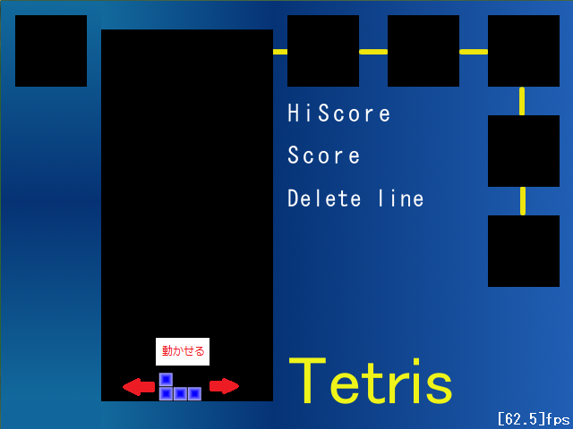

回転ができるようになり、だいぶテトリスらしくなってきましたね。
今回はちょっとしたとこの修正ですが、
時間を追うのでよく考えてください。
どうでしょうか？実際に動かしてプレイしてみると感じると思いますが、
着地後と次のテトリミノ出現までの時間がないと思います。
つまり、着地と同時に次のテトリミノが出てきます。
実際のテトリスは(ハードドロップしない限り)着地しても
一定時間経たないと次のテトリミノがでてきません。
その間にちょこちょこと微調整ができるものなんですが・・・
今回はその猶予時間を設定しましょう。
//control.cpp
#include "../include/main.h"
//コントロール
void Control(){
if(cur.flag){
//入力状況を取得
int input[]={
CheckStatePad(config.left),
CheckStatePad(config.right),
CheckStatePad(config.up),
CheckStatePad(config.down),
CheckStatePad(config.lspin),
CheckStatePad(config.rspin),
CheckStatePad(config.stock),
};
//自動落下の間隔
int interval=40;
//左
if(input[0]==1 || (input[0]>12 && input[0]%5==0)){
AddX(cur,-BS);
if(!IsValid(cur))AddX(cur,BS);
}//右
else if(input[1]==1 || (input[1]>12 && input[1]%5==0)){
AddX(cur,BS);
if(!IsValid(cur))AddX(cur,-BS);
}//上
else if(input[2]==1){
while(IsValid(cur)){
AddY(cur,BS);
}
AddY(cur,-BS);
cur.wait=40;//即終了
}//下
else if(input[3]){
interval=5;
}
//回転
if(input[4]==1){
Spin(cur,true);
}
else if(input[5]==1){
Spin(cur,false);
}
if(cur.cnt%interval==0){
//自動落下
AddY(cur,BS);
if(!IsValid(cur)){
AddY(cur,-BS);
cur.wait++;//猶予時間へ
}
}
//着地したら
if(cur.wait>0){
cur.wait++;//猶予カウントアップ
}
//猶予時間経過したら
if(cur.wait>40){
//現在のテトリミノは終了
cur.flag=false;
//保持しているblkをフィールドへ追加
for(int i=0;i<4;i++){
blkList.push_back(cur.blk[i]);
}
}
//カウントアップ
cur.cnt++;
}
else{
//新テトリミノ生成
cur=CreateTetriMino(Point(FX+BS*6,FY-BS*2),(BLK_COL)GetRand(BLK_KND_NUM-1));
//画面内有効フラグをtrueに
cur.flag=true;
}
}
さらに、回転したら猶予時間をリセットさせます。
//Spin.cpp
#include "../include/main.h"
//テトリミノの回転処理
bool Spin(TetriMino& t,bool isLeft){
//黄色は回転しない
if(t.blk[0].knd==YELLOW)return true;
//キャッシュ
TetriMino n=t;
//キャッシュのfieldをクリア
memset(n.field,false,sizeof(bool)*5*5);
//猶予時間リセット
n.wait=0;
・
・
・
}
これで着地した後少しだけ融通が利くようになりました。
自然とプレイできるようになったのではないでしょうか？
実行結果:

今回はここまでです。
次回はネクストブロックリストを表示させたいと思います。